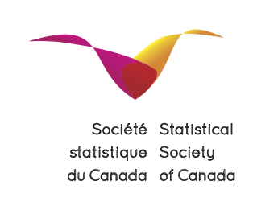

CanCOTS 2025
The first Canadian Conference on Teaching Statistics (CanCOTS 2025) will be hosted by HEC Montréal from Wednesday June 11th to Thursday June 12th, 2025. CanCOTS will be a participant-driven working meeting in the style of a curated “unconference”. After an initial roundtable aimed at engaging participants with state-of-the-art literature, the participants will split in small groups, each working on a priority area of interest. These priority areas will be short-listed before the meeting, so participants can arrive already having an idea of what they may want to collaboratively contribute to with their time, and can bring potential resources to share with the group.
Each small group will define and, at the end of the meeting, leave with concrete deliverables, either in progress or completed. Depending on the priority area, these deliverables could be in the form of conference proceeding papers or less traditional formats (e.g., banks of exercises, guidelines for curriculum, sample learning activities and assessment items, etc.)
Satellite workshop
A satellite workshop for college instructors on simulation-based inference will take place on Tuesday, June 10th. The focus is on the Probability and Statistics course offered in the pre-university degree in Natural sciences, Sciences and arts, and Science, Computer Science and Mathematics, among others. The day will include a two hours session in the morning. Participants will then collaboratively work on a project of their choice in small group to bring something home. Examples include
- incorporation of large thematic datasets
- adding programming languages for data science for calculations
- simulations and apps to illustrate probability and statistical concepts
- construction of exercises databases (WeBWork, learnR), etc.
There will be a session in English and one in French (if demand is sufficient). Sign up using this form to get notified when registration opens.
Format
Each small working group will be led by a team leader who will facilitate discussion and encourage progress toward the agreed upon deliverable(s). This team leader will also be responsible for giving a short introduction to the priority area to help launch the first day, and to motivate the working sessions that follow. Each group will present to all participants at the beginning of the second day to give a quick recap of the progress they made, and a final presentation at the end of the conference. The team leaders will be selected from volunteers from the community of statistics educators attending the conference, and will oversee the deliverables. CanCOTS will also be used to discuss the current state and needs of the statistical education community in Canada.
Lunches and coffee breaks will be provided.
Financial support
We are reserving $4K of the budget for travel support thanks to funding from CANSSI and CRM, which will be awarded based on need. The priority will be for graduate students and early career researchers without support from Tri-Council funding or equivalent grants. Participants will apply for support via the registration form; funding will be allocated by the scientific committee after the conference.
Priority areas
The organizers will solicit proposals for priority areas for the small-group working sessions from the community and carry out a vote to gauge interest in the proposals. To propose yourself as volunteer team leader on one of the priority areas (or to suggest another one), please fill this form. In advance of the meeting, selected priority areas will be defined, team leaders will be identified, and the chosen areas will be shared with participants to elicit ideas in preparation. As a launching pad for this community-driven shortlisting, some initial ideas will be shared. These potential priority areas include:
- Designing a modern Master’s Degree in Statistics - learning outcomes, curriculum, courses, textbooks and more
- Developing WeBWorK adaptive problems for service courses
- Adaptive Tutorials for Learning R using
learnR - Incorporating AI and ethics in statistics curricula
- Incorporating evidence-based practices in teaching
- Universal Design for Learning in Statistics Education
- Biostatistics courses on introduction to advanced analytical topics
Venue
The conference will take place on the 5th floor of the Hélène Desmarais building.
501, rue De La Gauchetière Ouest Montréal, QC H2Z 1Z5
The downtown campus is easily reached by public transport, either via metro (Square-Victoria-OACI station, orange line), or from the Gare Centrale REM station.
The main room will be Salle de cours MNP (A.536) (pdf map) and adjacent study rooms (Denis-Girouard A.545 and Laurent-Ferreira A.547).
Accommodation
Please note that the conference ends the day prior to Formula 1 Montreal start, so we encourage you to book your accommodation well in advance. Hotels nearby include the following
Background
“Conferences On Teaching Statistics” have a long and rich history, starting from the earliest such international conferences (International Conference on Teaching Statistics – ICOTS) in 1982 (Sheffield, UK) and 1986 (Victoria, Canada). A total of eleven ICOTS have been held, every 4 years since 1982, and a number of regional versions, including
- OZCOTS (Australia and NZ),
- USCOTS (United States),
- eCOTS,
- UKCOTS (United Kingdom),
- CFIES (France, Belgium)
have also been held.
Scientific committee
- Léo Belzile (HEC Montréal, contactperson)
- Alison Gibbs (University of Toronto)
- Wesley Burr (Trent University)
- Bruce Dunham (UBC)
Sponsors
We gratefully acknowledge financial support from
- the Canadian Statistical Science Institute (CANSSI) with support from NSERC,
- the Statistical Education section of the Statistical Society of Canada
- the Centre de Recherche Mathématiques
- HEC Montréal


